Retour sur… le débat SMS (Sciences-Médias-Société)
Le D ébat SMS : Sciences-Médias-Société
ébat SMS : Sciences-Médias-Société
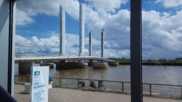
Événement de lancement du collectif, le débat SMS (Sciences-Médias-Société) a eu lieu le 14 avril 2018
2h40 de débat, plus de 20 intervenants…
Débat conçu par les fondateurs du collectif « Tous en sciences » et lancé par Marie Coris (économiste, Université de Bordeaux) et Pierre Dos Santos (cardiologue et physiologiste à l’Université de Bordeaux) pour l’Institut d’Etudes Avancées de Bordeaux, animé par Luc Paboeuf (chef de projet de Crisalidh, CIS IdEx Bordeaux) et accueilli par Cap Sciences. Cédric Brun (philosophe des sciences, Université Bordeaux Montaigne) a été notre grand témoin.
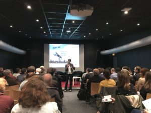
Introduction
Pour lancer le collectif, retour sur sa genèse par Marie Coris. Une nouvelle marche pour les sciences en 2018 ? Bordeaux est sur le qui-vive. Pas de mobilisation en France ? Bordeaux se constitue en collectif, se bouge, brave les grèves (s’en accommode en somme) et en un temps record, organise le débat « Sciences-Médias-Société » à l’occasion de la deuxième marche internationale pour les sciences. En mode « SMS », plus de 20 intervenants se sont succédé (chercheurs, journalistes, citoyens et médiateurs) en 2 heures pour lancer ce collectif citoyen sous la bannière « le savoir n’est pas une opinion« . 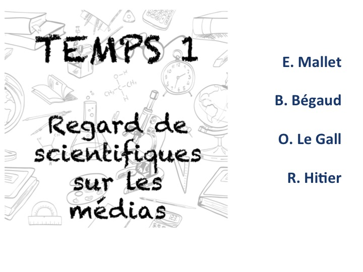
Temps 1. Regards de scientifiques sur les médias
Le traitement de la recherche par les médias est lui-même un sujet de recherche. Estelle Mallet (docteure en Sciences Politiques) a consacré sa thèse à cette question. Elle intervient en premier pour nous délivrer, en quelques minutes, les messages clefs de son travail.
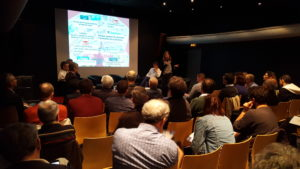
Face aux « fake news », ce temps a montré la nécessité de mieux se connaître, de mieux comprendre les besoins, contraintes et enjeux de chacun afin de porter un message qui soit conforme à ce que dit la recherche, à la portée réelle d’une « découverte », assimilable et utile pour le citoyen.
Pour alimenter les débats, ont rebondi :
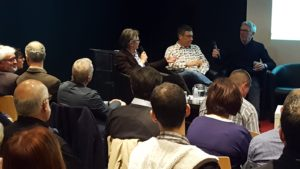
Bernard Bégaud (professeur émérite de pharmacologie, Université de Bordeaux) pour témoigner de sa prise de parole, nécessairement médiatique, au sujet du lien, un peu trop rapidement conclu entre psychotropes et maladie d’Alzheimer. Tout le monde se souvient de la « Une » de Science et Avenir… Bernard revient sur ce raccourci et décrypte l’importance du travail du chercheur qui prend la parole pour donner la raison des arguments scientifiques.
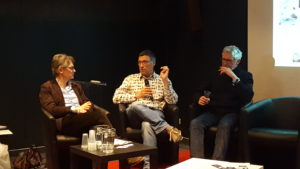
Olivier Le Gall (INRA, Président de l’Office Français pour l’Intégrité Scientifique, intervient pour souligner l’instrumentalisation politique de la science et de ses controverses. Il prend le cas d’une expérience vécue sur le réchauffement climatique. Et le fait, pour certains politiques, de ne pas « avoir le droit » d’utiliser ces mots. Comme si la controverse existait encore, comme si « réchauffement climatique » était… politiquement incorrect.
R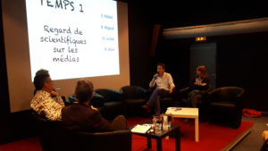aphaël Hitier (Rédacteur en Chef, Scientifilms), chercheur en neurosciences devenu journaliste scientifique et réalisateur de documentaires apporte son témoignage pour illustrer la méconnaissance des médias français en général vis-à-vis de la science et des scientifiques. D’un côté, la parole du scientifique est « sacralisée » quand de l’autre, et l’anecdote est un vécu, un « scientifique », peu importe sa spécialité, doit forcément avoir une compétence technique pour gérer le parc informatique de la rédaction…
Le débat est bien lancé : à qui la faute ? Aux journalistes qui se jettent sur les ‘news marquantes’ ? Aux scientifiques scientistes qui se veulent porter LA vérité ? Aux chercheurs qui, pour publier, enjolivent un peu leurs résultats ?
Il est temps de passer à notre deuxième temps, le « face-à-face ».
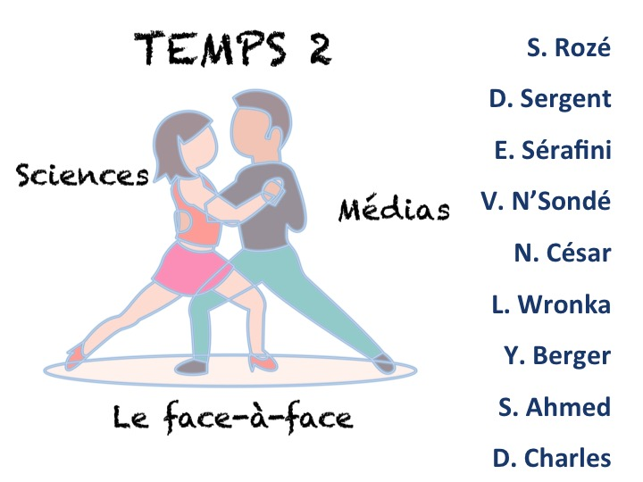
Temps 2. Sciences et Médias : le face-à-face
Scientifiques ou d’information, comment les journalistes dialoguent-ils avec la recherche? Comment choisissent-ils leurs sujets, leurs intervenants, sur quelles sources s’appuient-ils ? Quels crédits accordent-ils à quels chercheurs et pourquoi ? Comment traiter des sujets chauds et réagir dans l’urgence?
Pour mieux comprendre, ces questions ont été adressées à :
Simon Roze (RFI), journaliste radio qui est confronté au devoir de travailler dans l’urgence, à celui de traiter des hard news, parfois appelé à 4heures du matin pour résumer en moins d’une minute et sans image, la carrière absconse d’un grand scientifique disparu dans la nuit. En mode « grand public » mais sans trahison scientifique, bon courage!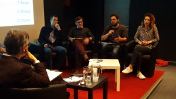
Denis Sergent, chef de la rubrique Sciences au journal La Croix soulève la difficulté du positionnement du journaliste scientifique, pris entre les communiqués de presse des centres de recherche (à qui l’on accorde, a priori, toute confiance) et la difficulté à « dialoguer » avec les chercheurs à l’origine des résultats communiqués. Comment faire le tri? Que et qui croire si personne ne prend le temps de « la dispute »?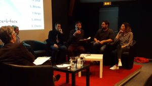
Emmanuel Sérafini, partageant avec Denis une sérieuse formation scientifique, journaliste indépendant au long pédigrée, rebondit pour insiste sur la grande confusion qui peut exister au niveau de la production du savoir scientifique par les équipes de recherches et les agences sanitaires à travers l’exemple des dangers de l’aspartame, un substitut du saccharose : 4000 études qui se contredisent depuis 40 ans, des méta-analyses qui ont tardé à venir, des recommandations divergentes… Bref une grande confusion dans l’émission du message et donc, forcément, une transmission chaotique et une incompréhension par les citoyens.
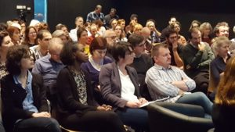Luc Paboeuf, notre animateur, pose alors la question du « temps » dont dispose les journalistes et les médias pour aborder leurs sujets. A côté du « temps court » et parfois même « du direct », certains médias peuvent bénéficier d’un temps plus long (qui ne sera jamais celui de la recherche ;-). Il interpelle alors Lucie Wronka, de Radio Campus, en charge de l’émission bimensuelle « Sciences à l’antenne ». Elle lui confirme qu’en tant que bimensuelle, elle a le temps d’aller au fond des sujets, de les travailler, d’en discuter sérieusement avec les chercheurs et même, d’apporter à l’émission la « petite patte radio campus » qui fait la différence. Et cette différence n’est pas neutre : « les jeunes pensent qu’ils n’aiment pas les sciences parce qu’un jour, un prof de maths les a terrorisés et qu’ils font un amalgame qui ne devrait pas être. Avec un peu d’humour et de prise de distance, on les amène à s’intéresser à ce qui les intéressait sans qu’ils le sachent ».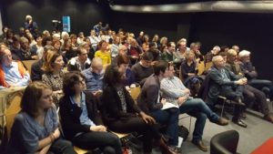
Victoire N’Sondé, journaliste pour 60 millions de consommateurs, agit au plus près du grand public. Son magazine doit être un porte-voix et un « passeur » sérieux. Telle est sa devise. Dans le temps long qui est le sien (mensuel) et par le positionnement de 60millions qui permet aussi de produire des études, cela est possible. Et cela l’est d’autant plus que les courriers reçus des lecteurs, très nombreux, permettent d’orienter ces études sur les problématiques et les questionnements qui sont ceux que se posent les citoyens.
Enfin, le té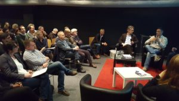moignage d’Yseult Berger, d’Universcience (Cité des Sciences et de l’Industrie) nous plonge dans l’univers merveilleux de la « co-compréhension » science-société, de la médiation au sens profond, où le journaliste se confronte, en les accompagnant sur de longues périodes, au quotidien des scientifiques. Elle insiste sur le jeu doublant gagnant que tout le monde peut en retirer. Le citoyen qui bénéficie du regard du journaliste qui, à force de dialoguer avec les chercheurs sur leur « terrain », s’imprègne de ce travail et le comprend mieux pour le restituer avec rigueur. Le chercheur, aussi, en tire des « bénéfices » car cette communication auprès du « grand public » est nécessaire, notamment au financement de ses recherches.
Nicolas César, journaliste économique à Sud-Ouest clôt ce « temps des journalistes » en intervenant sur le rôle du journaliste « de proximité », spécialisé en économie où la tension entre « opinion » et « jeu politique » est plus qu’ailleurs et toujours présente. Pas simple…
Et le chercheur face aux médias ? Témoignage de Serge Ahmed (directeur de recherche CNRS, spécialiste des neurosciences)
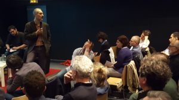Serge Ahmed a été un chercheur très fortement médiatisé. Il nous décrypte la danse du chercheur face aux média. Il nous raconte son expérience pour nous rappeler, nous alerter peut-être, sur la nécessité pour le chercheur de se préparer lorsqu’il se confronte aux média. Quand deux mondes aux temporalités, aux langages et aux finalités différentes se rencontrent, les pièges peuvent être nombreux. Et pour mener la danse ou tout simplement la « danser » en évitant le « pas de travers », le « contre-temps », le message est clair : avoir un message, un seul, et le plus simple possible.
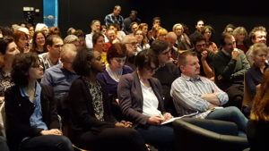A l’interface des chercheurs et des médias, Delphine Charles, chargée de communication scientifique (Université de Bordeaux) intervient pour nous expliquer la complexité de son métier, entre médias (qui demandent, dans l’urgence, des scientifiques pour prendre la parole sur les sujets « chauds » qui nécessitent une « parole de chercheur) et les chercheurs qui, eux, ne souhaitent pas forcément sortir de la zone de confiance de leur domaine « ultra-spécialisé », qui aimerait d’ailleurs plutôt parler de cela, même si « ça fait moins le buzz ». Mais ce n’est pas juste de la « com » nous apprend-elle, la médiation commence à faire son entrée dans l’Université et il y a des défis à relever! Un bon exemple, une expérience réussie? Que citer si ce n’est « ma thèse en 180s »?
A qui s’adresse-t-on? Pour qui travaille-t-on et qui veut-on informer? La société !
Il est venu le temps de lui donner la parole.
Temps 3. Les citoyens face aux « news scientifiques » : savoir ou salade ?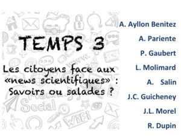
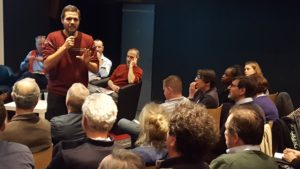
Pour nous mettre dans l’ambiance, Aaron Ayllon Benitez (doctorant en bio-informatique) décrypte l’histoire (certes d’actualité) du vaccin ROR entre « fake science », « fake news », et surtout « fake link » avec l’autisme. Il s’adresse à nous tous, il nous interpelle et nous amène à réfléchir…
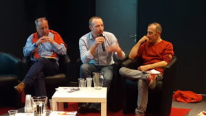
Une fois semé le virus du doute, Antoine Pariente (Professeur de pharmacologie-épidémiologie) nous apporte son éclairage, revient et explicite l’histoire racontée par Aaron : une observation n’est pas un fait scientifique. « Tout le monde observe que la terre est plate quand il sort dans la rue. Cela ne veut pas dire qu’elle l’est ». L’image parle, le dialogue peut alors s’établir avec les « citoyens » et en premier lieu, ceux qui s’engagent, à l’interface des sciences, dans une médiation quotidienne.
Ce sont alors Philippe Gaubert (Délégué Régional de l’association de soutien aux patients atteints de leucémie lymphoïde chronique – SILLC) et Lise Molimard (étudiante en Master de Médiation Scientifique, responsable de l’antenne de l’association On est là, parce qu’on est jeune avant d’avoir un cancer) qui prennent la parole pour expliciter le rôle des Associations de Patients pour créer un lien autre que le « trop d’information trop peu discernées d’Internet », pour établir une transversalité dans le rapport de la « verticalité » du médecin à l' »horizontalité » du patient.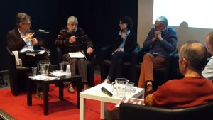
Antoine Salin (membre de l’Association Française pour l’Information Scientifique), Jean-Claude Guicheney (Ligue des Droits de L’Homme) et Jean-Luc Morel (chercheur CNRS en neurosciences, actif en diffusion scientifique ayant participé à la rédaction de la stratégie nationale de la culture scientifique technique et industrielle) apportent le témoignage de leurs expériences et de leur engagement avant que soit passée la parole à Raphaël Dupin (directeur de Cap Sciences) pour une transition bien sentie avec la salle. 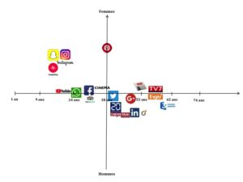
Médias et public, tout est résumé en une diapo qui en dit long, trop long. Comment ré-enchanter la société ? Comment communiquer, par quels média et sous quels formats?
S’engage ensuite un débat avec la salle, débat entre que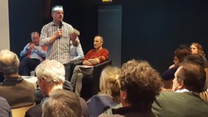stionnements et interrogations qui permet à Cédric Brun de rebondir, en tant que grand témoin de nos échanges, sur la nécessité de stimuler l’esprit critique. La science est un merveilleux outil d’émancipation démocratique. « Il n’est pas forcément toujours et partout intéressant d’interroger les résultats de la recherche, peut-être devrons-nous plutôt nous pencher sur la recherche en tant que processus, en tant qu’action productrice de résultats, qui n’ont pas forcément de valeur immuable de vérité ».
Il est venu le temps de prolonger les débats. Pierre Dos Santos nous y invite, autour du verre de l’amitié, certes, mais surtout dans le collectif « Tous en Sciences » dont le prochain rendez-vous se tiendra le 23 avril, à l’occasion de l’assemb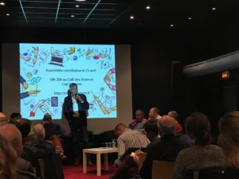lée constitutive. « J’appelle les scientifiques à descendre de leur tour d’ivoire. J’en appelle à la responsabilité des chercheurs et j’en appelle aux désirs des citoyens, à leur soif de savoir et de connaissance. Il est du devoir des chercheurs d’assumer les controverses qui en sont l’essence, il est du devoir de la société de se pas s’en tenir aux polémiques lobbyistes qui en sont la traduction trop rapide et déraisonnée. Ce n’est pas l’un contre l’autre que nous y parviendrons. C’est tous ensemble, « tous en sciences », que nous pouvons et que nous devons le faire, le penser, le co-construire ».
Rendez-vous pris? Inscrivez-vous Inscription
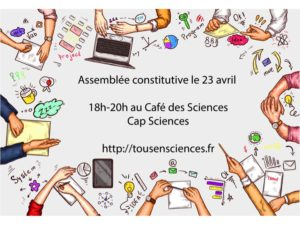
Crédits photos : ©spaxiax – stock.adobe.com, Nathalie Caplet, Olivier Pujolar.